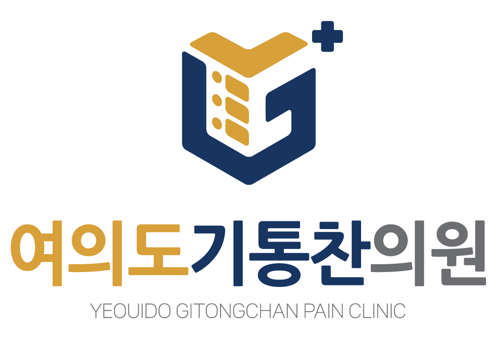
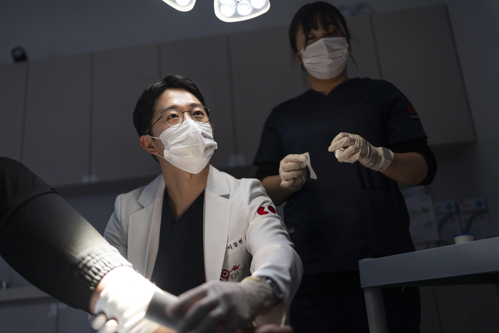
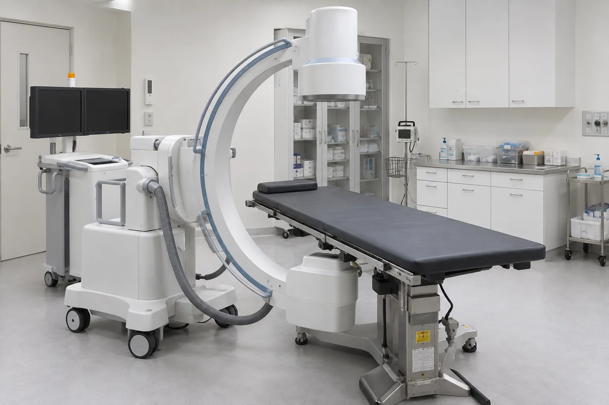

아픈 몸을 이끌고 찾아오신 만큼, 머무는 동안 가장 편안하게 쉬어갈 수 있도록

보이지 않는 부분까지 세심하게 살피는 기통찬 정밀 진단 시스템

여의도기통찬의원의 약속
‘기(氣)가 통(通)하면 찬(燦), 밝아진다.’
환자의 신체와 삶이 다시 활력을 찾아 빛나게 한다는 의미를 담았습니다.
겉으로 드러난 통증만 바라보지 않고,
그 뒤에 숨어 있는 원인까지 세심하게 살피는 것
그 마음을 '여의도기통찬의원'이라는 이름에 담았습니다.
YEOUIDO GITONG CHAN
여의도기통찬의
여의도기통찬의
5가지의 진료 원칙
우리가 지켜가는 원칙은 단순한 기준이 아닌,
환자를 대하는 태도이자 진료를 이어가는 약속입니다.
환자의 입장에서 생각하고, 신뢰와 배려를 바탕으로 진료하겠습니다.
-
01 언제나 환자의
입장에서 생각하는
원칙 -
02 통증의 원인을
끝까지 찾고자 하는
원칙 -
03 정직과 신뢰를
최우선으로 여기는
원칙 -
04 진지하게 경청하고
마음으로 공감하는
원칙 -
05 끊임없이 배우고
꾸준히 연구하는
원칙
환자분에게 해가 되지 않는 치료,
내 가족에게도 선뜻 제안할 수 있는
안전한 치료만을 고집합니다.
작은 통증도, 설명되지 않는 불편함도
가볍게 넘기지 않고
당신의 건강한 일상을 기통차게 지켜주는
따뜻한 주치의가 되겠습니다.
“환자의 이야기를 듣고, 통증의 원인을 찾을 때만큼은 누구보다 집요합니다.”
이동현 대표원장
Pain Management System
여의도기통찬의원
3단계 통증관리 시스템
통증 완화를 넘어
다시 아프지 않는 몸을
목표로 합니다.
-
STEP 01
신경차단술 먼저, 불을 끕니다
- 통증을 일으키는 신경 주변의 염증·자극을 가라앉힙니다.
- 통증이 어디에서 시작되는지 원인을 찾아가는 과정이기도 합니다.
- 통증을 조절하여 보다 효과적인 기능 회복을 돕습니다.
-
STEP 02
도수치료·체외충격파 몸의 기능을 다시 세웁니다
- 도수치료 - 1:1 맞춤 치료로 통증의 원인을 바로잡고 기능을 회복
- 체외충격파 - 약해진 조직의 회복을 돕고 재생을 촉진
- 통증이 다시 반복되지 않도록, 무너진 기능까지 바로 잡습니다.
-
STEP 03
크라이오·페인케어 통증의 악순환을 끊습니다
- 크라이오 - 냉각 자극으로 통증 신호를 낮추고 움직임을 개선
- 페인케어 - 무통증 신호를 전달하여 반복되는 통증 신호를 조절
- 치료 효과를 높이고 오래 유지될 수 있도록 돕습니다.


Night Care System
월 · 화 · 목 · 금 야간진료
수요일은 저녁 7시까지 진료
저녁 8시까지 야간진료
